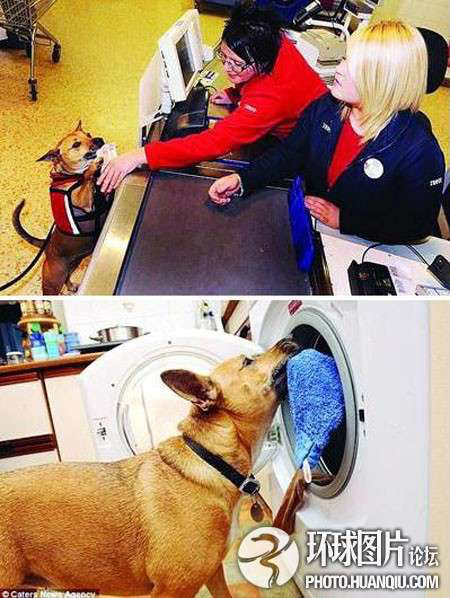

英国小狗能为主人做大多数家务活

英国西米德兰郡考文垂的4岁小狗桑迪已经成为当地人眼中不折不扣的“明星”。苏莱恩是英国西米德兰郡考文垂市人，她在一场车祸中身受重伤，从腰部以下彻底瘫痪，只能靠轮椅代步。2007年，苏从一名朋友那儿买来了一只名叫桑迪的小狗，当时桑迪只有几周大。可让苏做梦也没想到的是，桑迪竟在两年时间中学会了做大多数“家务活”，甚至还会帮主人一起到超市中购物。桑迪不仅是一条宠物狗，甚至还成了苏的全职“生活助理”！
英国西米德兰郡考文垂的4岁小狗桑迪已经成为当地人眼中不折不扣的“明星”。苏莱恩是英国西米德兰郡考文垂市人，她在一场车祸中身受重伤，从腰部以下彻底瘫痪，只能靠轮椅代步。2007年，苏从一名朋友那儿买来了一只名叫桑迪的小狗，当时桑迪只有几周大。可让苏做梦也没想到的是，桑迪竟在两年时间中学会了做大多数“家务活”，甚至还会帮主人一起到超市中购物。桑迪不仅是一条宠物狗，甚至还成了苏的全职“生活助理”！